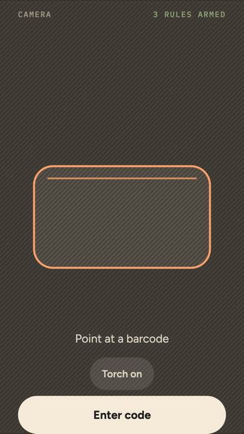
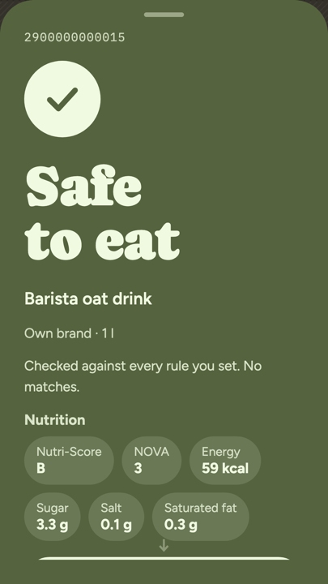
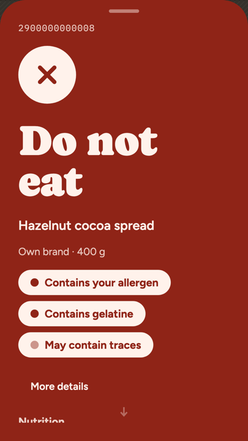
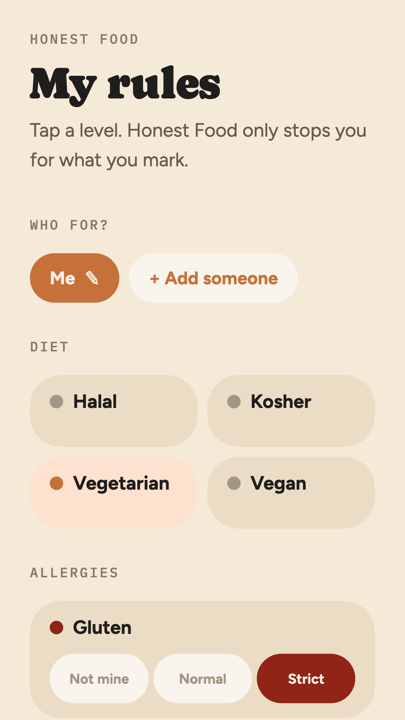

It shows you why
Every answer comes with its reasons, in the packet’s own words. “Contains gelatine” is something you can check against the label. “Violates your rule” is not.
Your rules, at two levels
Allergies can be strict — counting “may contain traces” — or normal. Diets: halal, kosher, vegetarian, vegan. And preferences that are notes rather than rules: no palm oil, low sugar, low salt, no alcohol.
More than one person
Keep a list for yourself and one for a child or a visiting relative. A scan is judged against every list at once, so cooking for someone else does not mean scanning twice.
It stays on your phone
There is no account, no sign-in, and no server of ours. Your rules, your history and the cached product data live in a database on the phone. Scanning asks Open Food Facts about the barcode — the number, not who you are. Photos of ingredient lists are read on the device.
It can be wrong, and says so
The product data comes from a volunteer database that is sometimes out of date, and recipes change without anyone recording it. Where the ingredients are unclear, Honest Food says “take a closer look” rather than “fits”. If you have an allergy, an intolerance or a strict rule, the packet decides — read the ingredient list yourself.
Honest Food is not a medical device and is no substitute for medical advice.